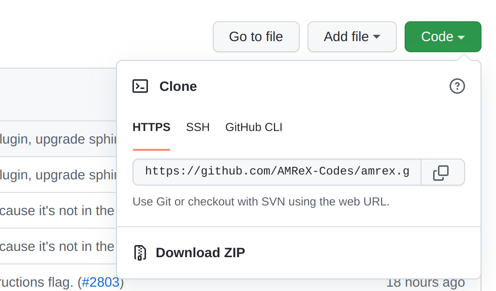

HelloWorld with GNU Make
Time to Complete: 10 mins
- GOALS:
Introduce Basic AMReX Elements
Compile with GNU Make
Compile and run with MPI for parallelization
This tutorial will walk through the steps involved for building AMReX HelloWorld
with GNU make. Essential elements of the HelloWorld code will also be briefly
discussed. The source code of this example can be found at amrex-tutorials/GuidedTutorials/HelloWorld/
and is shown below.

Animation showing how to build the HelloWorld example.
HelloWorld Source Code
The entire source code for the HelloWorld example is located in main.cpp
and shown below.
#include <AMReX.H>
#include <AMReX_Print.H>
int main(int argc, char* argv[])
{
amrex::Initialize(argc,argv);
{
amrex::Print() << "Hello world from AMReX version "
<< amrex::Version() << "\n";
}
amrex::Finalize();
}
The main body of this short example contains three statements. Usually the
first and last statements for the int main(...) function of every
program should be calling amrex::Initialize and amrex::Finalize,
respectively. The second statement calls amrex::Print to print out a
string that includes the AMReX version returned by the amrex::Version
function. Finally, the third statement calls amrex::Finalize to clean up
data structures that are necessary for proper AMReX operation.
Notice the braces placed between amrex::Initialize and
amrex::Finalize. It is considered a good programming practice to insert
these braces such that it is guaranteed that anything executed in the code is
done after AMReX has been initialized, and before AMReX is finalized.
The example code includes two AMReX header files. Note that the name
of all AMReX header files starts with AMReX_ (or just AMReX in the case of
AMReX.H). All AMReX C++ functions are in the amrex namespace.
Getting the Code
To run the HelloWorld example we will need the AMReX source code and the code
for the HelloWorld example. These two code sets can be conveniently downloaded
with Git. To check to see if Git is available on your local machine type
git --version. If needed,
install git.
Clone the AMReX Repo
{kind=link}
In a web browser, navigate to the main AMReX repo. Click the green code button, and select HTTPS from the dropdown window. You can copy the html address of the repo by clicking on the overlayed squares next to it.
At a terminal, type the following:
git clone https://github.com/AMReX-Codes/amrex.git
and Git will download the AMReX repo into the folder ./amrex.
Note
Development is done off of the development branch (default). If instead, you want to install a release you can replace the command above with:
git clone https://github.com/AMReX-Codes/amrex.git --branch 22.06
Clone the AMReX-Tutorials Repo
Next we will clone the AMReX-Tutorials repo. In order for the tutorial codes
to find the AMReX source code, it is necessary to clone the tutorials
directory at the same level as amrex. i.e., we want a directory structure
like,
Parent/
├──── amrex
└──── amrex-tutorials
Alternatively, we can set the environment variable AMREX_HOME to the location of
the amrex directory.
At a terminal navigate to the parent directory above the directory for AMReX, and type:
git clone https://github.com/AMReX-Codes/amrex-tutorials.git
This will download the contents of the tutorials into a directory named
amrex-tutorials. At this point, we have all the source code we
need in place and can continue to the compile and run steps.
Compiling the Code with GNU Make
Now move to the amrex-tutorials/GuidedTutorials/HelloWorld/ directory to build the code.
Typing make will start the compilation process and result in an executable
named main3d.gnu.DEBUG.ex. The name shows our example uses the GNU compiler with the debug
option set. It also shows that the executable is built for
3D simulations. Although this simple example code is dimension independent, dimensionality
does matter for all non-trivial examples. The build process can be adjusted by
modifying the amrex-tutorials/GuidedTutorials/HelloWorld/GNUmakefile file. More
details on how to build AMReX can be found in Building AMReX.
Running the Code
The example code can be run as follows,
./main3d.gnu.DEBUG.ex
The result may look like,
AMReX (22.06-10-g18d0a2861d31) initialized
Hello world from AMReX version 22.06-10-g8d0a2861d31
AMReX (22.06-10-g18d0a2861d31) finalized
The version string means the current commit 8d0a2861d31 (note that the first
letter g in g8d0a… is not part of the hash) is based on 22.06 with 10
additional commits. If the version string contains “-dirty” as in
22.06-10-g18d0a2861d31-dirty, it means the AMReX work tree is dirty (i.e. there are uncommitted
changes).
In the GNU make file, GNUmakefile, there are compilation options for DEBUG mode (less optimized
code with more error checking), dimensionality, compiler type, and flags to
enable MPI and/or OpenMP parallelism. If there are multiple instances of a
parameter, the last instance takes precedence.
Parallelization
Now let’s compile the code to with MPI support by typing make USE_MPI=TRUE (alternatively you can
set USE_MPI=TRUE in the GNUmakefile). This should make an executable named
main3d.gnu.DEBUG.MPI.ex. Note MPI in the file name. You can then run,
mpiexec -n 4 ./main3d.gnu.DEBUG.MPI.ex amrex.v=1
The result may look like,
MPI initialized with 4 MPI processes
AMReX (22.06-10-g18d0a2861d31) initialized
Hello world from AMReX version 22.06-10-g18d0a2861d31
AMReX (22.06-10-g18d0a2861d31) finalized
If the compilation fails, you are referred to Building AMReX for
more details on how to configure the build system. The optional command line
argument amrex.v=1 sets the AMReX verbosity level
to 1 to print the number of MPI processes used. The default verbosity
level is 1, and you can pass amrex.v=0 to turn it off.
More details on how runtime parameters are handled can be found in
section ParmParse.
If you want to build with OpenMP, type make USE_OMP=TRUE. This should make
an executable named main3d.gnu.DEBUG.OMP.ex. Note OMP in the file name.
Make sure the OMP_NUM_THREADS environment variable is set on your system.
You can then run,
OMP_NUM_THREADS=4 ./main3d.gnu.DEBUG.OMP.ex
The result may look like,
OMP initialized with 4 OMP threads
AMReX (22.06-10-g18d0a2861d31) initialized
Hello world from AMReX version 22.06-10-g18d0a2861d31
AMReX (22.06-10-g18d0a2861d31) finalized
Note that you can build with both USE_MPI=TRUE and USE_OMP=TRUE. You
can then run,
OMP_NUM_THREADS=4 mpiexec -n 2 ./main3d.gnu.DEBUG.MPI.OMP.ex
The result will be,
MPI initialized with 2 MPI processes
OMP initialized with 4 OMP threads
AMReX (22.06-10-g18d0a2861d31) initialized
Hello world from AMReX version 22.06-10-g18d0a2861d31
AMReX (22.06-10-g18d0a2861d31y) finalized